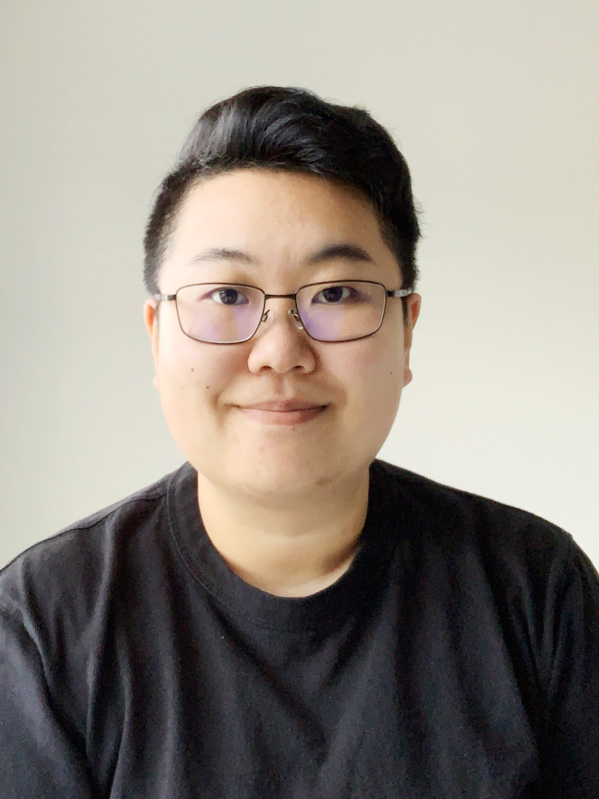

Teacher, Researcher, & Coffee Enthusiast
If this were a map
it would be the map of the last age of her life,
not a map of choices but a map of variations
on the one great choice. It would be the map by which
she could see the end of touristic choices,
of distances blued and purpled by romance,
by which she would recognize that poetry
isn’t revolution but a way of knowing
why it must come.
--- from Adrienne Rich, "Dreamwood"

I am Assistant Professor of English at the University of the Fraser Valley in Abbotsford BC, which is situated on the unceded traditional territories of the Stó:lō people. I specialize in C20/21 British and Irish literature, modernism, critical theory, and the environmental humanities. At UFV, I regularly teach English courses ranging from C20/21 British and Irish lit to academic writing. Working with students and creating learning communities are always the highlights of my job!
In 2013, I moved from my hometown Jiaxing (Zhejiang Prov., China) to Victoria (BC, Canada), the latter of which is located on the unceded traditional territories of the Lekwungen and W̱SÁNEĆ peoples. I got both my MA and PhD at the University of Victoria, and I felt lucky to be able to spend a few years in that beautiful city. Beyond academia, I do a lot of drawing (illustrations and oil painting) and cooking. Recently I started to learn baking: so far, I made blueberry muffins, cheesecake, and two very flat loaves of banana bread...